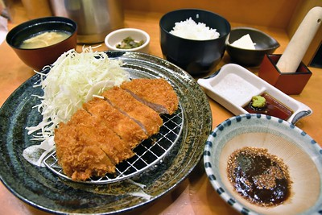

Tonkatsu

What is Delicious Tonkatsu?
If you're into your Japanese Cuisine then Tonkatsu is a must have in your recipe arsenal. This panko-fried style dish can be enjoyed as the main to a set meal with rice vegetables and miso soup, or can be enjoyed as a snack/light meal to accompany a cold beer.
Ton meaning pork Katsushort for cutlet is like the name suggests; a dish that consists of a breaded deep fried pork cutlet. It involves coating slices of eith pork loin or fillet in panko (bread crumbs) and deep frying them golden and ejoyed with a choice of various sauce and salad. It is also the katsu genarally used in katsu curry across Japan (although the west tend to favour chicken!).
Today we will be showing you how to make Tonkatsu using pork fillet!
Ingredients
(Serves up to 4)
- pork fillet (4-500g)
- Panko breadcrumbs (can be picked up at most supermarkets in the asian section or for the real stuff visit your local asian supermarket!)
- 3 eggs
- Plain flour (enough to cover a dinner plate)
- Salt & Pepper
- Bulldog Tonkatsu sauce and/or Ponzu (both can be picked up at your local asian supermarket or in some asian sections of supermarkets)
- 1 lemon to garnish
- White cabbage
- vegetable, sunflower ot corn oil (1L)
Preparation
- First beat 3 eggs into a bowl nothing too deep.
- Then roughly sprinkle flour onto a plate until the whole plate is covered.
- In a shallow bowl add the panko.
- Grab the cabbage and slice very thinly and separate into thin stringy bits before giving them a rinse in a collinder. Allow to strain and sprinkle into a plate.
- Finally line another plate with 2 pieces of kitchen roll ofset slightly to crate a star shape (this will be to absorb oil from the Tonkatsu out of the oil
Method
Now we are ready to go!
- Start by slicing the pork fillet into roughly 1cm thick slices.
- Lay them flat and sprinkle salt & pepper to both sides.
- Then take ALL of the slices, put them onto the plate of flour and get them all covered in flour.(At this point it is a good idea to get the oil heated in a suitable wok or deep frying pan.
This next part requires a little planning as you will run out of space so keep the pork slices on the flour and your chopping board should be free.
One at a time we are going to dip the pork into the beaten eggs until it is fully covered, bringup above the bowl, allow to drip the excess then transfer to the panko bowl.
The panko will stick to the egg. Flip it over grab som panko and cover the slice and gently press until the whole slice is covered in panko.